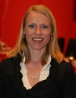
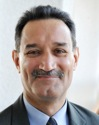

Home / Issues / Human Rights / Lead Discussants
Michael is a 17 year veteran of corporate domestic and global diversity and inclusion work. Has full responsibility for the design and implementation of DLA Piper’s diversity and inclusion strategy and programming. Prior to joining DLA Piper this year, Michael spent 16 years consulting in the area of diversity and inclusion, change management and organization development as part of the global diversity & inclusion and change management practices at Towers Perrin and as one of the founding members of The FutureWork Institute.
Tanya Odom, Ed.M, is a highly regarded consultant, facilitator, trainer, teacher and speaker. She has conducted hundreds of workshops for adults and youth around the United States and the world. She has conducted workshops in diversity education, human rights education, team-building, conflict management, educational equity, girls’ leadership development, among others. She recently co-authored the publication "Evaluation in the Field of Education for Democracy, Human Rights and Tolerance”. She is also the diversity columnist for the new national magazine Diversity Woman.
Inés Alberdi of Spain has been appointed as the new Executive Director of the United Nations Development Fund for Women (UNIFEM) and assumed her duties on 4 June 2008.
Ms. Alberdi has worked for more than 25 years on gender issues and in politics. She comes to UNIFEM from her previous position as Professor of Sociology at Madrid University where she had taught Political Sociology and Sociology of Gender since 1993. Prior to that, she was Director for Research at the Centre for Sociological Research (1992–1993). Ms. Alberdi has published extensively on family and women’s issues. Her distinguished academic career also included positions as Associate Researcher at George Washington University, Washington, DC (1988–1989), and Visiting Scholar in the Department of Sociology at Georgetown University, Washington, DC (1978–1979), as well as an Eisenhower Fellowship (1998).
From 2003 to 2007, Inés Alberdi was an elected Deputy in the Madrid Assembly. She served as an expert for the Equal Opportunities Unit of the European Commission on the networks Family and Work and Diversification of Occupational Choices for Women (1998–2000) and worked for the Inter-American Bank as Adviser for Women in Development (1989–1990). She also served as a Member of the Board of INSTRAW, the United Nations International Research and Training Institute for the Advancement of Women (1986–1989).
“I am delighted to take on my new responsibilities,” said Ms. Alberdi of her appointment. “I come with high hopes and am determined to make my contribution. For me, UNIFEM has been a key reference in the struggle for women’s rights and gender equality throughout the years. I want the organization to continue to be at the cutting edge of these issues and will dedicate all my efforts to this,” she added.
Inés Alberdi is the fourth Executive Director of UNIFEM. She succeeds Noeleen Heyzer of Singapore (1994–2007), Sharon Capeling-Alakija of Canada (1989–1994) and Margaret Snyder of the USA (1978–1989).
Georg Kell is the Executive Director of the United Nations Global Compact, the world's largest voluntary corporate citizenship. Following extensive experiences in Africa and Asia as a financial analyst, Kell began his career at the UN in Geneva, where he worked from 1987 to 1990 with the UN Conference on Trade and Development (UNCTAD). In 1990, he joined the New York office of UNCTAD, which he headed from 1993 to 1997. In 1997, Kell became a senior officer in the Executive Office of UN Secretary-General Kofi Annan, responsible for fostering cooperation with the private sector. He has served as head of the UN Global Compact since 2000. A native of Germany, Kell holds advanced degrees in economics and engineering from the Technical University of Berlin.
Anniken Huitfeldt (born 29 November, 1969 in Bærum) is a Norwegian politician representing the Norwegian Labour Party. Huitfeldt grew up in the small town Jessheim, north of Oslo. From 1996 to 2000 she was the leader of the Workers' Youth League, the youth wing of the Labour Party. After the 2005 parliamentary elections, she became a representative of Akershus in the Storting, she was a deputy representative in 1993-1997 and 2001-2005.On February 29, 2008 she became Minister of Children and Equality in the Second cabinet Stoltenberg.
Joanne Sandler is the Deputy Executive Director for Programmes of the United Nations Development Fund for Women (UNIFEM). She has worked with international organizations and women's groups worldwide for the past 26 years, with a focus on organizational development, strategic planning and economic justice. She has also served on the Board of Directors of a number of international and domestic organizations, including the Breakthrough, Association for Women's Rights in Development, Gender at Work, and Women Make Movies.
With almost ten years experience in socially responsible investing, Amy has successfully engaged key domestic and international corporate executives in dialogues aimed at strengthening and implementing environmental, social, and governance (ESG) strategies and has worked on a number of Calvert's initiatives, including the development of the Calvert Women’s Principles, the first global code of conduct focused on empowering, advancing, and investing in women worldwide.
As a Corporate Governance and Business Ethics Analyst, Ms. Vora focuses on the semiconductor, telecommunications and computers industries. She also works closely on corporate diversity issues including the Calvert Women's Principles and diversity-related advocacy efforts.
Since first going to China as an educator in 1985 Dan has passionately pursued partnerships between international NGOs and domestic institutions in China and Southeast Asia. Dan became the Executive Director of Verité in 2004 and has led the expansion of global capacity and the establishment of formal partnerships with NGOs and Regional Offices around the world. Prior to working at Verité, Dan was the CEO of the China Program for WWF-World Wildlife Fund and led development and relief efforts in China and Indonesia for Catholic Relief Services.
Ms. Menon has extensive experience with both domestic civil rights and international human rights issues. Prior to joining DOSW, Ms. Menon was a fellow at the American Civil Liberties Union (ACLU) of Northern California's Racial Justice Project and worked on civil rights concerns for women and people of color at the Lawyers Committee for Civil Rights, Stanford Community Law Clinic, and Equal Justice Society. On the international front, Ms. Menon developed the Cambodian government's HIV/AIDS action plan for women, participated in a successful trial on the right to education for girls in the Dominican Republic before the Inter-American Court of Human Rights, and worked on prisoners' rights in Mexico for Human Rights First.
Cecily Joseph is Director of Corporate Responsibility at Symantec Corporation, the
fourth-largest independent software company in the world. Cecily oversees Symantec's global
corporate social responsibility program, which includes environmental, social, and governance
program development, integration, and alignment. As the company spokesperson on matters related to
corporate responsibility, Cecily responds to stakeholder questions and concerns and oversees the
company's reporting and communication efforts. Cecily represents Symantec as a focal point for the
UN Global Compact US Network and helps to organize and facilitate meetings with multinational
corporations, universities, and NGOs on human rights, labor, environment, and anticorruption.
Cecily's responsibilities also include coordination and design of Symantec's corporate-wide
global climate change program. This program addresses a new go to market strategy around green IT,
includes internal and external communication, work with non-profit organizations and initiatives to
reduce Symantec's environmental footprint. She manages an internal environmental stewardship
council which sets goals and targets and reports to the Symantec CEO and chairman quarterly on
conservation, transportation and responsive software packaging practices related progress.
Cecily joined Symantec after 12 years with VERITAS Software where she managed the company's
legal affairs and served as Executive Director of the VERITAS Foundation. She received a Bachelor's
Degree from the University of Miami and a law degree from Tulane University. Cecily serves on the
boards of The Housing Trust of Santa Clara County, Abode Services, and The Emergency Shelter
Program. She lives in Hayward, California with her husband and two children.
Since Ms. Lintonen entered the service of the Ministry for Foreign Affairs of Finland in 1971, she has served in many countries in Europe and Africa. She was appointed as a Permanent Representative of Finland to the United Nations in New York in 2005. Ms. Lintonen holds a Master of Political Sciences from University of Helsinki.
Dr. Elisabeth Kelan is lecturer in work and organizations in the Department of Management at King’s College London. She helped setting up the Centre for Women in Business at London Business School. Prior to that, she worked at the London School of Economics and Political Science and the University of Zurich. Elisabeth is a leading scholar on gender relations in organizations. Her specialism is in the use of qualitative and ethnographic methods. She has presented her research internationally, published widely, and has received various awards for her research. She provides organizations with advisory, consulting and speaking services on issues related to women, gender and diversity. She is a contributor to Lady Geek and edits the Women in IT section of Women-nomics. Elisabeth is passionate about practicing and sharing yoga and is a qualified yoga teacher.
Raphael Crowe is Senior Gender Specialist with the Bureau for Gender Equality, International Labour Office, Geneva. He has held this post since October 2003.
His responsibilities in the Bureau include liaison with ILO constituents (governments, employers’ and workers’ organizations) and their representatives on the ILO Governing Body and the International Labour Conference. Mr Crowe supports the Director of the Bureau with UN relations, UN Inter-agency activities and UN Reform, and is the focal point for UN Global Compact, Corporate Social Responsibility, ILO Better Work programme, women’s entrepreneurship development, as well as ILO programming issues.
Mr. Crowe provides technical support for ILO Offices in Europe, Central Asia and North America. He is the Gender Bureau’s contact person on International Labour Standards, child labour issues, and on the ILO Declaration on Fundamental Principles and Rights at Work as well as with employers’ and workers’ activities and on labour relations issues.
Before his assignment in Geneva, Mr. Crowe worked for the ILO Bureau for Employers’ Activities in Asia for ten years. He was posted in New Delhi (1994-2000) and then in Manila (2000-2003) and was responsible for providing advisory services and support to employer constituents in South Asia, and in South East Asia and the Pacific.
Prior to joining the ILO, Mr. Crowe was Chief Executive of the Northern Territory Chamber of Commerce and Industry, Darwin, Australia, providing policy, technical and advocacy support to the business community. He represented Australian employers for 18 years at regional, national and international levels.
Mr Crowe has a Bachelor of Commerce (Industrial Relations) from the University
of New South Wales, Sydney, Australia. He has completed leadership and management development
programmes at Mt Eliza Executive Education Campus of the University of Melbourne-Melbourne Business
School.
Mr. Crowe is married with three children.
Bobbi Silten joined Gap Inc. as Chief Foundation Officer in September 2005. She heads the Gap Foundation, overseeing Gap Inc.’s global community involvement and investment programs including grants, in-kind donations, community outreach and employee volunteerism. Gap Foundation’s primary focus is supporting underserved youth and women, enabling them to be what’s possible. Silten is also involved in the Gap (PRODUCT) RED initiative that supports The Global Fund’s fight against HIV/AIDS in Africa and is a member of Gap Inc.’s Diversity Council.
Prior to joining Gap Inc., Silten was the President and Commercial General Manager of the U.S. Dockers brand at Levi Strauss & Co. She led all aspects of the brand’s U.S. business from strategic planning and product design to consumer and retail marketing.
Silten started her career in advertising and worked for over 11 years at Foote, Cone & Belding in San Francisco where her clients included Levi’s, The Clorox Company and Nintendo.
Silten has a long and active history of community involvement. She is currently a volunteer mentor and member of the national board for Summer Search, a leadership development organization for underserved youth. Silten is also a volunteer mentor for leaders of KIPP (Knowledge Is Power Program) schools. In an effort to promote an integration of business and society, Silten is a member of Taproot Foundation’s Pro Bono Action Tank Leadership Team, the California Volunteers Business Council Work Group and is Corporate Programming Co-Chair for the 2009 National Conference on Volunteering and Service.
Silten holds a bachelor’s degree in Social Science from the University of California, Berkeley.
Jim Wall is the Global Managing Director, Talent Solutions and Chief Diversity Officer for Deloitte Touche Tohmatsu. Jim’s primary responsibilities include providing leadership to member firms in the areas of strategic talent management, recruitment, development, mobility, multiculturalism and inclusion. Jim is also a member of the Board of Directors of Deloitte Central Europe.
Prior to assuming his current role in 2004, Jim was the National Managing Director of Human Resources for Deloitte & Touche USA LLP. During the twelve years of Jim’s leadership, the firm earned wide acclaim and recognition as an employer of choice. It has been ranked one of the "100 Best Companies to Work for in America" by Fortune magazine for seven years and one of the "100 Best Companies for Working Mothers" by Working Mother magazine for ten consecutive years. Jim’s insights on human resources issues have been featured in The Wall Street Journal, USA Today, Fortune, CFO and Chief Executive and other publications. In 2002, Human Resources Executive magazine named him its Human Resources Executive of the Year.
Jim is a member of the Advisory Council of the International Institute of Management Development (IMD) in Lausanne, Switzerland, the Global Diversity Council of the World Economic Forum, the Board of Trustees of the American Management Association International and the Society for Human Resource Management.
Prior to joining Deloitte in 1984, Jim was the Director of University Housing
and a member of the graduate faculty of Michigan State University, where he earned his Master of
Arts degree in Higher Education Administration. He earned his Bachelor of Arts degree in
Sociology at Saint Michael’s College, where he most recently served as the Chairman of the Board of
Trustees. He also holds the degree of Doctor of Humane Letters, honoris causa, from that same
institution.
Bama Athreya is the Executive Director for the International Labor Rights Forum, a Washington DC-based nonprofit advocacy organization. The ILRF promotes worker rights worldwide through research, publications, public education and advocacy related to trade agreements and corporate accountability.
At the ILRF, Dr.Athreya has developed new programs and advocated for stronger protections for workers’ rights with governments, multinational corporations and international organizations. She developed and launched new work including the Rights for Working Women Campaign to research, understand and promote viable remedies for sexual harassment and violence in the workplace; the Ethical Garments Project working with brands, labeling initiatives and public procurement efforts to create a ‘sweat free’ standard for apparel production worldwide; the China Rule of Law Project which trains judges, arbitrators, lawyers, and employees of government legal aid centers and trade unions in labor law within China; and work with partner organizations in each of the Central American countries to develop comprehensive independent assessments of national labor standards.
Dr. Athreya joined the ILRF in early 1998, just after returning from a two-year assignment in Cambodia as the AFL-CIO’s Country Representative. While in Cambodia she directed worker education and labor law training programs and conducted extensive research on the problems of women workers and on child labor. She is a social anthropologist, and received her Ph.D. from the University of Michigan. She spent three years in Indonesia, first as a State Department official and later as an independent researcher, and wrote her dissertation on Indonesia’s labor movement. She has also lived and worked in China, Taiwan and India.
Dr. Athreya has published extensively on the issues of corporate accountability and human rights in global supply chains, and has provided public commentary on CNN’s Lou Dobbs Tonight, MSNBC, National Public Radio, and other major media outlets.
Dr. Osman Ataç is the Chief of the TSI Strengthening Section of the International Trade Centre UNCTAD/WTO (ITC). He joined ITC In 1989 ITC as a Chief Technical Adviser and was stationed in Manila, Philippines, until 1996, in charge of projects in the Asia-Pacific region. Dr. Ataç joined ITC headquarters in 1996 as a Senior Adviser and assumed the position of Section Chief of the Enterprise Management Development Section of ITC in November 2001. He holds a B.S. degree in business administration and an M.S. degree in mathematics from the Middle East Technical University (METU), Ankara, Turkey and a Ph.D. in marketing from the University of North Carolina (UNC) at Chapel Hill.
Before joining ITC Mr. Ataç was a professor of international business and taught in several universities including UNC, METU, Ohio University, University of Massachusetts Boston, ADL Management Institute and Harvard University Extension School. Mr. Ataç is the author of numerous training packages, books, cases and software applications in business management, international trade, management development, institutional strengthening, exporting and training of co9nsultants and trainers. Most notably he is the author of the Business Management Grid (The BMG, 1995) and its application software, An Expert System for Enterprise Diagnostics (DICONEX 1995).
He is currently leading a team of ITC professionals, international experts and institutions in the development of a ground-braking bench-marking and impact assessment system for business support organizations.
Virginia Littlejohn is CEO of Quantum Leaps, Inc. – which shares women entrepreneurial best practices and facilitates their access to markets – and is Chair of TradeBuilders, Inc. Ms. Littlejohn is currently working on development of The Roadmap to 2020 to fuel women’s enterprise development in the United States between 2009 and 2020. She also is helping to incubate WEConnect International, designed to get certified women’s business enterprises into the global supply chain. Since the 1970s, her primary focus has been advocacy on behalf of women entrepreneurs. In 1980s, Ms. Littlejohn led the lobbying effort to get funding for the U.S. Small Business Administration’s Office of Women’s Business Ownership, served as national president of the National Association of Women Business Owners, and was one of the primary architects of the Women’s Business Ownership Act of 1988. She has co-authored case studies, a book, and the policy recommendation that led to the creation of the U.S. Export Assistance Centers (USEACs). She served as Vice President of the World Association of Women Entrepreneurs, and has been a senior advisor to the OECD's Entrepreneurship and SME Centre regarding women's entrepreneurship. She has served on federal advisory commissions, chaired international trade committees, and brought international expertise to SME advisory boards organized by IBM and American Express. Ms Littlejohn is a frequent speaker at global conferences. She has also served as a judge for international business plan competitions, won numerous American and international awards, and trained women entrepreneurs and SMEs from more than 20 countries.
A native of Majorca, Spain, Carmen Castillo is the President and owner of Superior Design International, Inc., (SDI). Fluent in Spanish, English, and Italian, she founded SDI as a Florida corporation in 1992. Today, the company provides its clients with web-based vendor and supply chain management services and tools, IT and technical temporary staffing, independent contractor compliance programs, and payroll services. Carmen’s responsibilities as President of the ISO 9001:2000-certified firm include the coordination of company operations and global marketing programs, along with growth strategies. Carmen is an experienced and highly visible entrepreneur with an outstanding work ethic. Guided by her efforts, SDI has grown into to an international company with business operations in the U.S., Canada, Europe, China, and India. SDI is nationally certified as a minority and women-owned business enterprise.
Susan Myers became the executive director of the UN Foundation’s New York Office in September 2005. Previously, she worked for the Better World Campaign, the UN Foundation’s advocacy arm, starting in March 2000 as research and legislative coordinator and rising to legislative and advocacy director.
Nancy Glaser is Senior Vice President, Global Communications. In this position she is responsible for internal and external communications worldwide, ensuring that Avon speaks in one voice to its key constituencies.
Anne Black is a Vice President and member of the Corporate Engagement team at Goldman Sachs, where she serves as program director for the "10,000 Women" initiative. This initiative will provide a management and business education for 10,000 women worldwide over the next five years.
Richard Gruenberger is the pro bono counsel in the firm’s New York office, assisting with regional pro bono programs in Boston and Philadelphia and overseeing operations for the New York office’s pro bono efforts, including the firm's New York Pro Bono Signature Project, Access to Education.
Barbara J. Krumsiek is Chair, CEO and President of Calvert Group, Ltd., an investment management firm headquartered in Bethesda, Maryland. Calvert manages approximately $12 billion in assets. Calvert offers a nationally recognized full family of sustainable and responsible mutual funds. Ms. Krumsiek also serves as Director and Chair of Acacia Life Insurance Company.
Ms. Krumsiek is recognized as a pre-eminent business leader in the Washington D.C. area serving on the boards The Eugene and Agnes E. Meyer Foundation, PEPCO Holdings, Inc., the Economic Club of Washington, D.C., and the Federal City Council. In 2007, she served as Chair of the Greater Washington Board of Trade.
Contact
Ursula Wynhoven
wynhoven@un.org
(Last Updated: 18 March 2009)